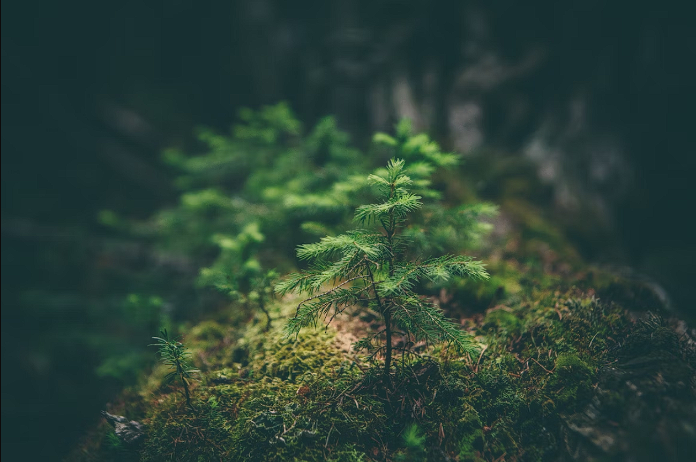

Bem-vindo à VidaVerde
Nosso objetivo é proteger o meio ambiente e promover a sustentabilidade. Já pensou como seria se cada um de nós tivesse ao menos uma atitude voltada ao meio ambiente? Queremos te proporcionar experiências únicas de contato com a natureza, te ensinar algumas mudanças que podem ser feitas no dia a dia para preservar nosso bem mais precioso. Queremos tornar o mundo um lugar melhor pra se viver para aqueles que amamos. Contamos com você!

Bem-vindo à nossa ONG
Junte-se a nós na missão de preservar e promover a biodiversidade.